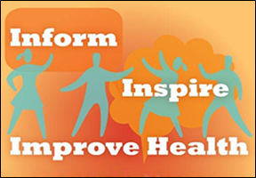

ShareCompartir
ShareCompartir
Declines in budgets have negatively affected the public health community making it hard to participate in traditional meetings, trainings and events. The concept of developing immersive Virtual Instances (VIs) of in-person gatherings, making them feel more real, interactive and useful; as well as delivering them within a fully accessible, secure environment, has been the mission of the recently formed Virtual Platform Initiative (VPI) team at CDC. For CDC and partners, VIs of in-person events, meetings and trainings propose an integrated foundation for multimedia content development and public and partner relations. VIs offer the increased ability to elevate collaboration and secure information sharing between government and public sector entities in a way that is intuitive and logical to both entities.
Upcoming Virtual Events
PHIVE is Back! …For an Entire Year!
The Public Health Informatics Virtual Event (PHIVE) is now in ‘Archive Mode’, and open 24/7 until February, 2015.
If you missed the Public Health Informatics Virtual Event for 2014; not to worry! We have re-opened the portal until February of 2015—giving access to all presentations that took place over the 3-day period of the live event.
This archive, hosted by the Centers for Disease Control and Prevention, the Association of State and Territorial Health Officials, and the National Association of County and City Health Officials, offers an immersive, virtual meeting with public health informatics experts from government, national public health associations and private enterprise.
When: Until February 2015
What: 24 Presentations by Public Health Informatics Experts
Where: On Your Laptop or PC
Cost: FREE
Presenters are featuring innovative work related to the theme:
Strengthening Public Health – Health Care Collaboration
Theme Tracks Include:
- Informatics Policy and Practice
- Research and Innovation
- Supporting Public Health Evidence Base through Informatics Practice
Click here to access the PHIVE Archive Event today!
The VPI team from the Public Health Informatics and Technology Program Office, Division of Informatics Practice, Policy and Coordination demonstrated a successful proof of concept for an interactive virtual event experience by producing a virtual event simultaneously with an in-person conference, successfully hosting the government’s first hybrid event – the Public Health Informatics 2011 Virtual Conference (PHIVC)*. Remotely located state and local partners and informatics colleagues were able to experience sessions and activities simultaneously with the in-person PHI conference held at the Hyatt Regency Downtown in Atlanta, GA, August 21, 2011 through August 24, 2011, from their desktops. The VPI team developed an innovative blueprint for employees and partners to experience activities remotely during traditional conferences, without everyone having to spend money on travel and lodging or negatively affecting the environment. The PHIVC was well received by attendees, as there were 1,865 online registrations, (after only 1 week of advertising) – with the traditional conference averaging around 1500.
Taking the virtual aspect further, the VPI team produced the CDC Centers of Excellence in Public Health Informatics Virtual Symposium; (June 26th, 2012) – an all-virtual event that featured geographically dispersed speakers from around the U.S. and participants from around the globe. With the success of this use case, the VPI team was able to prove that participants and speakers could affectively and economically interact without having to meet anywhere in-person. Even though this event had never taken place before, (even as an in-person event), it pulled in around 700 participants from all 50 states and several countries.
 The VPI team produced another hybrid event, August 7th-9th, 2012, again from the Hyatt Regency Downtown in Atlanta, GA – the National Conference on Health Communication, Marketing and Media Virtual Event. For the first time, participants from academia, public health research and practitioners from all levels of government and private sectors were able to engage in a cross-disciplinary dialogue online in an immersive, collaborative environment. In addition to viewing all of the plenary sessions and a select few breakouts in full motion, broadcast quality video, participants were able to utilize the VPI’s newly developed web chat feature and speak face-to-face in private chat sessions. The NCHCMM Virtual Event was a smashing success, drawing over 1,100 participants from all over the world.
The VPI team produced another all-virtual event on August 27-28, 2012, which featured geographically dispersed speakers from around the U.S. and participants from around the globe. Informatics participants from academia, public health, government and the private sector were able to engage on these key topic areas in an immersive, collaborative environment:
- Public Health Initiatives within Beacon Communities
- Health Information Exchange and Governance
- Mobile Applications for Public Health
Participants were treated to full motion video of the speakers giving their presentations with PowerPoint and newly implemented moderated chat Q&A sessions. The Public Health Informatics: Model Best Practices Virtual Meeting was another win for CDC, pulling in close to 1000 participants from all over the country.
The VPI team branched out to Chicago, November 3-4, 2012, to stream a live presentation feed of AMIA 2012. Carrying the in-person event’s theme, Informatics: Transforming Health and Healthcare, the AMIA 2012 Virtual Symposium featured the audio and PowerPoint presentations of several select sessions.
With the addition of an immersive collaboration chat lounge and help desk support room, AMIA’s first virtual event was innovative and cutting-edge. Look for future collaborations between AMIA and CDC in the future!
December 18, 2012 wrapped up the year for the VPI team by welcoming some of the leading minds in healthcare transformation to present in a highly anticipated virtual event, focused on meaningful use of data exchange – specifically as it relates to public health.
Leading public health experts provided a comprehensive overview of electronic health records and meaningful use in an immersive, virtual event space. The event featured sessions and other exclusive content that concentrated on the following objectives:
- Defining the role of Public Health in Meaningful Use
- Gaining insight into Meaningful Use Lessons Learned from State and Local Health Departments
- Preparing for Stage 2 Meaningful Use
- Gaining a broader understanding of the road ahead and the challenges for Meaningful Use and Public Health Data Exchange
The event featured live video with closed captioning of remote speakers, PowerPoint presentations, face-to-face video and text chat functionality, and a host of other collaborative functionality. The event drew close to 900 attendees with a record 412 simultaneous collaborators in the Q&A session!
If you are interested in inquiring about VPI projects or would like to book a consult for your meeting or event, please don’t hesitate to contact us:virtual@cdc.gov.
*This event is no longer accessible
- Page last reviewed: October 14, 2014
- Page last updated: June 23, 2016
- Content source: